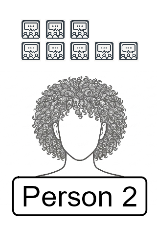

{kind=link}
viewof count = Inputs.number([0, 100], {
value: 10,
step: 1,
label: "Sample size:"
})
viewof runButton = Inputs.button("Generate Simple Random Sample")
html`<div style="display: flex; flex-direction: column; gap: 20px;">
${viewof count}
${viewof runButton}
</div>`Sampling the town of Statsville
Introduction
Statsville is a quaint fictional hamlet that is nestled in the foothills of the Regression Mountains with a beautiful view of Lake Median. The population is quite small as only 100 residents between the ages of 13 and 59 live in Statsville. The layout of the town is a basic square grid with 20 unique roads – conveniently named with first letters A to T.
The Mean Diner is looking to increase business and has decided to start advertising on social media. Before investing into their campaign, management wishes to know what sort of effort is required to advertise on social media. In particular, management needs to know how many social media apps each resident typically uses so they can spend their advertising dollars wisely.

A diagram below displays all 100 residents along with an icon for each social media site (e.g., TikTok, YouTube, Instagram) the resident uses regularly. For example, Person 2 regularly uses 8 social media sites as appears 8 times. Another includes an image of those same residents stratified by their respective age groups (teenagers, twenty-somethings, residents in their 30s, in their forties and fifties). Lastly, a final figure includes an image of each resident grouped by the street in which they live.
We will use this population to explore different sampling techniques to help the Mean Diner estimate the average number of social media accounts for residents in Statsville.
Teacher Notes & Citations
This activity was heavily influenced by the Random Rectangles activity (Scheaffer, et al., 1996). All images were generated using the Gemini Large Language Model (Google, 2026).
Google. (2026). Gemini 3.6 Flash [Large language model]. https://gemini.google.com/app
Scheaffer, R.L., Watkins, A., Gnanadesikan, M., Witmer, J.A. (1996). Random Rectangles. In: Activity-Based Statistics. Textbooks in mathematical sciences. Springer, New York, NY. https://doi.org/10.1007/978-1-4757-3843-8_21
Full Population
Below is an image of residents of the town of Statsville along with icons corresponding to the number of social media apps each resident regularly uses.
Simple Random Sample
When little knowledge is known about the distribution of the population, the standard approach is to use a Simple Random Sample. A simple random sample is like playing a game of bingo or the lottery – each person (or number) has an equally likely chance of being selected. In lieu of a bingo cage or lottery spinner, we can use the computer to generate the sample. Use the below random number generator to select residents (by their ID number) to be sampled.
Grouped by Ages
Below is an image of all the residents of Statsville but they have been grouped by ages, teenagers, those in their 20s, in their 30s, in their 40s, and in their 50s, respectively.
{kind=link}
Stratified Sampling
Here the population is grouped by age and a quick look shows that distribution of social media apps is not the same across all age groups (visually it appears residents in their 20s have more social media apps than residents in their 50s). It is possible that a simple random sample would not truly be representative of the population. We can use these groupings and the random number generators below to build a Stratified Sample.
Population grouped by Streets
This diagram shows the 100 residents grouped by the street in which they live.

Cluster Sampling
Here, the residents have been grouped by the street of their home. A visual inspection shows no clear patterns in the distribution social media apps by street (as compared to grouping by age where it was fairly clear different age groups have different number of social media apps). This type of segmentation of the population leads to a method known as Cluster Sampling – randomly choose clusters (in this case Streets) and sample all residents that live on a specific street.